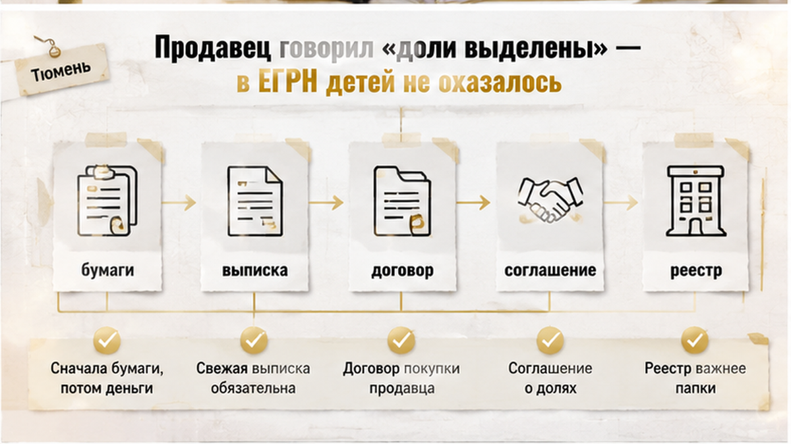

Одобренная ипотека — это ещё не сделка. Это подтверждение, что банк готов дать деньги конкретному заёмщику. Квартиру за вас при этом никто не проверил.
История собирательная — типичный тюменский сценарий, поэтому без имён, адреса, суммы и названия банка. Покупатели нашли вторичку, согласовали цену, получили одобрение и уже держали в голове дату аванса. На финальной стадии продавец между делом обронил: «Квартиру брали с маткапиталом, но доли давно выделены, всё оформлено». За несколько дней до передачи денег покупатели заказали свежую выписку из ЕГРН и запросили документы-основания. В выписке среди собственников значились только двое взрослых — детских долей в реестре не оказалось. Сделку развернули до аванса, и закончилось всё спокойно ровно потому, что проверка успела раньше платежа.
Меня зовут Святослав Шакин, я риэлтор в Тюмени — The Риэлтор. Если в истории квартиры был материнский капитал и вы не понимаете, что запрашивать до аванса, напишите мне и покажите документы до внесения денег: Telegram или MAX. Разберу конкретный объект, а не абстрактную ситуацию.
Материнский капитал в истории квартиры — не стоп-сигнал. Это триггер, после которого меняется список документов к проверке.
По статье 10 Федерального закона № 256-ФЗ использование средств маткапитала на жильё влечёт обязанность оформить это жильё в общую собственность родителей и детей с определением размеров долей. То есть у ребёнка должно появиться зарегистрированное право. Не обещание, не намерение, не «мы у нотариуса подписывали» — запись в реестре.
Срок исполнения простой. Без ипотеки — шесть месяцев после перечисления средств продавцу. С ипотекой — шесть месяцев после полного погашения кредита и снятия обременения.
Вот здесь и рвётся. Человек закрыл ипотеку, снял обременение, выдохнул — и до выделения долей не дошёл. Проходит несколько лет, он выставляет квартиру и совершенно искренне говорит покупателю: «Маткапитал был, но это давно, всё в порядке». Он не врёт. Он просто не различает «я собирался» и «зарегистрировано».
Для покупателя разница принципиальная. Одобрение ипотеки исполнение этой обязанности не проверяет: банк смотрит на заёмщика и на объект в своей логике, а не на семейную историю продавца. И одобренные деньги не гарантируют, что регистрация пройдёт гладко — одна строка в реестре останавливает процесс, который казался решённым. Механику я подробно разбирал в материале о том, как одобренная ипотека упирается в запись в ЕГРН.
Покупатели сделали единственно правильную вещь: не поверили на слово. Заказали выписку из ЕГРН — не ту, что продавец месяц назад показывал со своего телефона, а актуальную, на текущую дату.
И тут важно понимать ограничение документа. Обычная выписка из ЕГРН не показывает факт использования материнского капитала. Графы «здесь был маткапитал» в ней нет и быть не может. Она показывает другое: кто сегодня собственник и в каких долях.
Именно по этому признаку несоответствие и вылавливается. Продавец говорит, что доли детям выделены, а в составе собственников — двое взрослых. Значит, регистрации не было.
Связка «выписка чистая — значит, всё в порядке» здесь не работает. Реестр молчит не потому, что проблемы нет, а потому, что ему нечего сказать по этому вопросу. Реальную картину даёт другой комплект.
Минимум, который покупатели запросили до аванса: свежую выписку из ЕГРН с составом собственников, договор, по которому продавец сам приобрёл квартиру, документы о распоряжении средствами маткапитала со справкой Социального фонда России и соглашение о выделении долей, если оно составлялось.
Разрыв между искренним рассказом продавца и записью в реестре повторяется в разных декорациях. Я описывал случай, где справка о закрытии ипотеки была на руках, а залог в ЕГРН всё ещё держался. Основания разные, вывод один: пока записи нет, ссылаться можно только на намерения.

Разговор с продавцом был спокойным. Никто не кричал, никто не прятал бумаги.
— Материнский капитал использовали?
— Да, использовали. Но доли выделены, всё оформлено.
Проблема в том, что фраза «доли выделены» юридически не значит ничего, пока право ребёнка не зарегистрировано. Соглашение об определении долей — документ-основание. Право возникает после регистрации. Между подписью и реестром иногда проходят годы, а иногда не проходит ничего.
Когда покупатели показали свежую выписку, разговор пошёл по знакомому кругу. «Этого не может быть». «Наверное, выписка старая». «Мы точно всё подписывали». В сухом остатке: намерение было, документ, возможно, тоже был, а до реестра дело не дошло.
И здесь нельзя склеивать два разных вопроса. Первый: исполнена ли обязанность по маткапиталу. Второй: окажется ли будущая сделка незаконной. Покупателю до внесения аванса достаточно первого — это повод остановиться и выяснить стадию, а не спорить о юридических перспективах на кухне у продавца.
Решение семья приняла за вечер. Аванс не вносить, предварительный договор не подписывать, идти смотреть другие объекты.
Дело не в том, что продавец показался жуликом. Он выглядел человеком, который искренне уверен: у него всё сделано. Просто арифметика оказалась не в его пользу.
Чтобы стать продавцом без звёздочки, ему сначала нужно довести доли детей до реестра. А когда доли в реестре появятся, в квартире будет несовершеннолетний собственник — и на продажу потребуется предварительное разрешение органа опеки. Это последовательность, которая меряется месяцами, а не днями.
У покупателей был свой таймер. Одобрение ипотеки живёт ограниченный срок, ставка и условия зафиксированы не навсегда. Ждать, пока чужая семья догонит собственное оформление, — значит поставить свою сделку в зависимость от чужой скорости с непонятным финалом.
Поэтому вместо разговора «давайте небольшой задаток, чтобы квартиру не увели» они просто вышли из объекта.
Сразу оговорюсь, чтобы никого не пугать: отсутствие детской доли в ЕГРН не даёт основания автоматически утверждать, что будущая сделка окажется ничтожной. Это не приговор квартире и не клеймо на продавце. Это сигнал выяснить, исполнена ли обязанность и на какой она стадии.
Но и мифическим этот риск я не назову. Если обязательство не исполнено, впоследствии возможны требования со стороны органов опеки, прокуратуры, Социального фонда или иных заинтересованных лиц. Обещать, что добросовестность покупателя на сто процентов снимает любые претензии, я не стану.
Ценность такого финала — в цене вопроса. До аванса она равна стоимости свежей выписки и одному неудобному разговору. После передачи денег вы уже ничего не проверяете — вы возвращаете. Как выглядит вторая стадия, я разбирал отдельно: деньги ушли раньше, чем закончилась проверка.
Здесь путаются даже покупатели с опытом. «Маткапитал в квартире» — это не один риск, а два разных сценария. С разной логикой и разными сроками.
Наш случай. Обязанность возникла, исполнение не доведено до конца: соглашение либо не подписано, либо подписано, но право детей так и не зарегистрировано. Ребёнок собственником ещё не стал, а обязательство перед ним висит.
Продавец в такой позиции не может «просто продать». Сначала он закрывает долг перед реестром: соглашение об определении долей и регистрация — через МФЦ или электронно. Госпошлина 4000 рублей делится между новыми собственниками (разъяснение Управления Росреестра по Пермскому краю от 22.01.2026). Сроки — около 7 рабочих дней при прямой подаче и около 9 через МФЦ.
Сама процедура не страшная. Страшно то, что идёт следом.
Ситуация зеркальная. Ребёнок уже собственник, запись в ЕГРН есть — и именно поэтому продать квартиру в один шаг нельзя. Отчуждение имущества несовершеннолетнего требует предварительного разрешения органа опеки: статья 37 ГК РФ и статья 21 ФЗ № 48-ФЗ. Разрешение получают до сделки и подтверждают, что жилищные условия ребёнка не ухудшатся. На практике опека часто настаивает на альтернативе: одновременной покупке другого жилья либо обязательстве выделить ребёнку долю в новом объекте.
Типовой срок рассмотрения — до 15 рабочих дней после принятия полного пакета документов; в Тюменской области порядок уточняет распоряжение Департамента социального развития области № 49-р. И отсчёт идёт не с того дня, когда продавец пришёл в кабинет, а с того, когда собран весь комплект.
Как права ребёнка внутри семьи разворачивают сделку буквально накануне денег, я показывал в другом кейсе: квартиру переоформили внутри семьи прямо перед задатком.
Теперь соедините два сценария — и станет понятно, почему покупатели ушли. У нас работал первый. Но он не заканчивается регистрацией долей, он в неё упирается: как только доли попадут в реестр, включится второй. Проблема не решается, она меняет форму. Именно связка «сначала реестр, потом опека, потом сделка» и превращает дни в месяцы.
В тюменской практике аванс часто вносят так: посмотрели квартиру, понравилось, продавец достал папку с документом пятилетней давности — «вот, всё моё». Свежую выписку заказывают позже, когда назначена дата сделки. Порядок должен быть ровно обратным. Сначала бумаги, потом деньги.
Если продавец обмолвился про материнский капитал — или квартира куплена в те годы, когда семья могла им распорядиться, — до аванса я запрашиваю:
Последний пункт — тот самый, на котором рассыпался наш casus. Папка может быть толстой, а реестр пустым.
| Что смотрю | Сценарий А: детских долей в ЕГРН нет | Сценарий Б: детские доли в ЕГРН есть |
|---|---|---|
| Что показывает выписка | Собственники только взрослые, следов права ребёнка нет | Ребёнок указан среди правообладателей с конкретной долей |
| Что предстоит продавцу | Соглашение о долях и его регистрация | Предварительное разрешение опеки на отчуждение доли ребёнка |
| Кто ещё участвует | Росреестр или МФЦ; при действующей ипотеке залог банка сохраняется | Орган опеки и попечительства; возможна альтернативная сделка |
| Ориентир по срокам | Около 7 рабочих дней при прямой подаче, около 9 через МФЦ | До 15 рабочих дней после принятия полного пакета |
| Что с деньгами | Госпошлина 4000 рублей делится между новыми собственниками | Опека может потребовать покупку другого жилья или долю в новом объекте |
| Мой ответ по авансу | Не вношу, пока записи не появились в реестре | Обсуждаю только после разрешения на руки |
Обратите внимание на неприятную арифметику: в сценарии А продавцу нередко предстоит пройти обе колонки подряд. Сначала реестр, потом опека. Это не «неделя туда-сюда».
И то, что я повторяю на каждой первой встрече: деньги, переданные до проверки, возвращаются несравнимо тяжелее, чем не переданные вовсе. Как это выглядит, когда расписка уже написана, я разбирал отдельно — когда деньги ушли раньше проверки. В нашей истории этой главы просто не случилось.
Если продавец говорит «доли выделены», но в ЕГРН их нет — вы поверите на слово или потребуете свежую выписку до аванса?
Сомневаетесь, что именно запрашивать у продавца по конкретной квартире? Напишите мне — разберу пакет документов до того, как вы внесёте аванс.
Telegram: @Tyumen_Rieltor · MAX: написать в MAX
Продавцы уже прочитали новость и трактуют её просто: «проблемы больше нет». С 2026 года по Федеральному закону № 195-ФЗ от 07.07.2025 доли детям можно регистрировать без согласия банка, даже при действующей ипотеке. Раньше банк был тем самым узким горлышком, о которое всё спотыкалось.
Только оговорки здесь весомее заголовка. Квартира остаётся в залоге — снятия обременения новая норма не даёт. Возможность выделить доли не равна выделенным долям. И если детские доли в реестре появятся, продажа всё равно упрётся в разрешение опеки: упрощённый порядок выделения его не заменяет.
Что из этого следует покупателю с одобренной ипотекой? У продавца может быть искреннее намерение всё исправить. У вас — календарь: одобрение живёт ограниченный срок, ставка и условия не замораживаются под чужие бумажные дела. Ждать, пока чужая семья пройдёт сначала регистрацию, потом опеку, — это осознанный риск остаться и без квартиры, и без прежних условий кредита. Тем более что одна запись в реестре умеет тормозить сделку на финишной прямой: похожую механику я разбирал в материале о том, как строка в выписке ЕГРН останавливает сделку с одобренной ипотекой.
И честная граница, без запугивания. Отсутствие детской доли в реестре само по себе не даёт основания утверждать, что любая будущая сделка окажется ничтожной. Последствия зависят от документов и от того, исполнена ли обязанность. Риск другого рода: возможные требования опеки, прокуратуры, Социального фонда или иных заинтересованных лиц. Обещать, что добросовестность покупателя на сто процентов снимет любые претензии, я не стану — это было бы неправдой. И этот разбор не заменяет юридическую консультацию по вашей ситуации.
Чем всё закончилось. Покупатели не вносили аванс, не подписывали предварительный договор, не «резервировали» квартиру на словах. Заказали свежую выписку за несколько дней до передачи денег, увидели расхождение между рассказом и реестром — и поехали смотреть другие объекты. Деньги остались у них, одобрение банка осталось действующим. Потеряли вечер и стоимость выписки.
Вот в этом и вся разница. Не в том, что вторичка опасна, а в том, где стоит ваша ручка — до аванса или после. Квартиры с историей материнского капитала покупают спокойно и постоянно: смотрят реестр, задают неудобный вопрос, при необходимости дают продавцу время закрыть свои хвосты. Проверка не сорвала сделку — она отделила «не подошло» от «влипли».
Поэтому единственное, что я прошу сделать до денег: заказать свежую выписку и спросить, где именно зарегистрированы доли. Один вечер, одна бумага, один прямой вопрос. Дальше — уже ваш выбор, а не чужая история.